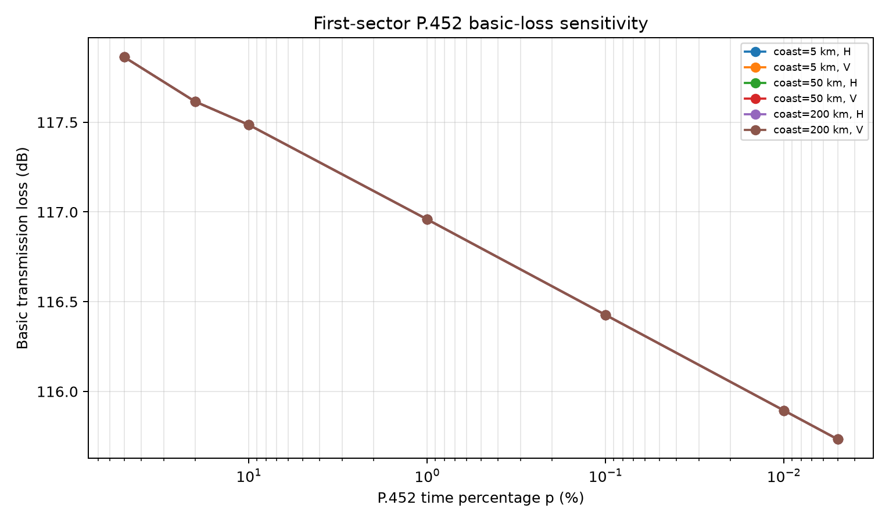
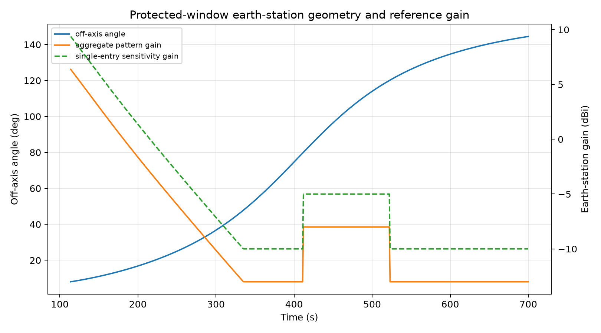
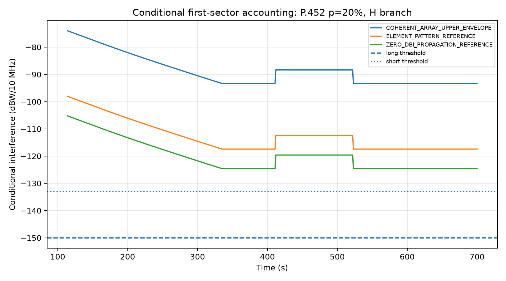
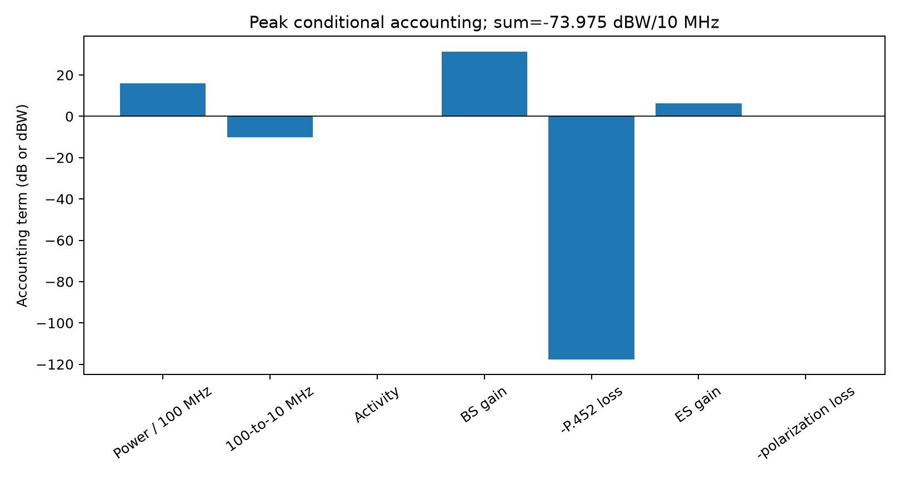

E3 FIRST-SECTOR P.452 DROP-IN SUMMARY Status: PASS Sector: E3_SITE_18_SEC_1 P.452 rows: 42 P.452 basic-loss range: 115.733600600 to 117.863252559 dB Gain-accounting rows: 49308 Protected samples: 587 MATLAB release: 2026a P.452 commit: 86f8026ce39635fa2b599e50d6d01fe5b0d6bbfe Minimum ES off-axis: 8.035691596 deg Maximum nominal aggregate ES gain: 6.374418487 dBi Highest conditional accounting value: -69.093555112 dBW/10 MHz Highest-value BS case: COHERENT_ARRAY_UPPER_ENVELOPE Highest-value ES pattern: single_entry_section_1_1 Highest-value P.452 p: 0.005 % Highest-value polarization: H Claim boundary: ONE_SECTOR_ACCOUNTING_AUDIT_NOT_PAPER_RESULT Next gate: HUMAN_REVIEW_OF_ONE_SECTOR_ACCOUNTING_AUDIT Open items: - Final composite WMMSE beam gain is not available. - Exact coast distances are not frozen; sensitivity scenarios are retained. - Propagation-time and operational-exceedance composition is not frozen. - Physical polarization/XPD model is not frozen.
| gain_case | bs_gain_dbi | status | target_azimuth_deg | target_elevation_deg | sector_azimuth_deg | sector_boresight_elevation_deg | horizontal_offset_deg | vertical_offset_deg | horizontal_attenuation_db | vertical_attenuation_db | array_element_count | coherent_array_gain_upper_db | peak_element_gain_dbi |
|---|---|---|---|---|---|---|---|---|---|---|---|---|---|
| ZERO_DBI_PROPAGATION_REFERENCE | 0 | pure propagation accounting reference | 10.8894 | 2.9997 | 0 | -10 | 10.8894 | 12.9997 | -0.336795 | -0.479978 | 256 | 24.0824 | 8 |
| ELEMENT_PATTERN_REFERENCE | 7.18323 | Reference accounting cases only; not the final composite WMMSE beam gain. | 10.8894 | 2.9997 | 0 | -10 | 10.8894 | 12.9997 | -0.336795 | -0.479978 | 256 | 24.0824 | 8 |
| COHERENT_ARRAY_UPPER_ENVELOPE | 31.2656 | conservative total-power coherent upper envelope; not final composite beam gain | 10.8894 | 2.9997 | 0 | -10 | 10.8894 | 12.9997 | -0.336795 | -0.479978 | 256 | 24.0824 | 8 |
| coast_distance_km | p452_time_percentage | polarization_label | bs_gain_case | earth_station_pattern_type | max_interference_dbw_per_10mhz | min_interference_dbw_per_10mhz | mean_interference_dbw_per_10mhz | long_exceedance_fraction | short_exceedance_fraction | minimum_off_axis_deg | maximum_earth_station_gain_dbi |
|---|---|---|---|---|---|---|---|---|---|---|---|
| 5 | 0.005 | H | COHERENT_ARRAY_UPPER_ENVELOPE | single_entry_section_1_1 | -69.0936 | -88.468 | -83.9702 | 1 | 1 | 8.03569 | 9.37442 |
| 5 | 0.005 | V | COHERENT_ARRAY_UPPER_ENVELOPE | single_entry_section_1_1 | -69.0936 | -88.468 | -83.9702 | 1 | 1 | 8.03569 | 9.37442 |
| 5 | 0.01 | H | COHERENT_ARRAY_UPPER_ENVELOPE | single_entry_section_1_1 | -69.2538 | -88.6282 | -84.1305 | 1 | 1 | 8.03569 | 9.37442 |
| 5 | 0.01 | V | COHERENT_ARRAY_UPPER_ENVELOPE | single_entry_section_1_1 | -69.2538 | -88.6282 | -84.1305 | 1 | 1 | 8.03569 | 9.37442 |
| 5 | 0.1 | V | COHERENT_ARRAY_UPPER_ENVELOPE | single_entry_section_1_1 | -69.7862 | -89.1607 | -84.6629 | 1 | 1 | 8.03569 | 9.37442 |
| 5 | 0.1 | H | COHERENT_ARRAY_UPPER_ENVELOPE | single_entry_section_1_1 | -69.7862 | -89.1607 | -84.6629 | 1 | 1 | 8.03569 | 9.37442 |
| 5 | 1 | H | COHERENT_ARRAY_UPPER_ENVELOPE | single_entry_section_1_1 | -70.3187 | -89.6931 | -85.1953 | 1 | 1 | 8.03569 | 9.37442 |
| 5 | 1 | V | COHERENT_ARRAY_UPPER_ENVELOPE | single_entry_section_1_1 | -70.3187 | -89.6931 | -85.1953 | 1 | 1 | 8.03569 | 9.37442 |
| 5 | 10 | V | COHERENT_ARRAY_UPPER_ENVELOPE | single_entry_section_1_1 | -70.8453 | -90.2198 | -85.722 | 1 | 1 | 8.03569 | 9.37442 |
| 5 | 10 | H | COHERENT_ARRAY_UPPER_ENVELOPE | single_entry_section_1_1 | -70.8453 | -90.2198 | -85.722 | 1 | 1 | 8.03569 | 9.37442 |
| 5 | 20 | V | COHERENT_ARRAY_UPPER_ENVELOPE | single_entry_section_1_1 | -70.9751 | -90.3496 | -85.8518 | 1 | 1 | 8.03569 | 9.37442 |
| 5 | 20 | H | COHERENT_ARRAY_UPPER_ENVELOPE | single_entry_section_1_1 | -70.9751 | -90.3496 | -85.8518 | 1 | 1 | 8.03569 | 9.37442 |




data/real/e3_first_sector_p452/FIRST_SECTOR_TERRAIN_DECISION.json data/real/e3_first_sector_p452/p452_profile.csv data/real/e3_first_sector_p452/p452_parameters.json data/real/e3_first_sector_p452/FIRST_SECTOR_P452_PREP_AUDIT.json data/real/e3_first_sector_p452/p452_basic_loss.csv data/real/e3_first_sector_p452/p452_coupling_export.csv data/real/e3_first_sector_p452/P452_FIRST_SECTOR_MATLAB_AUDIT.json data/real/e3_first_sector_p452/bs_gain_accounting.csv data/real/e3_first_sector_p452/earth_station_gain_timeseries.csv data/real/e3_first_sector_p452/gain_accounting_timeseries.csv.gz data/real/e3_first_sector_p452/conditional_threshold_summary.csv data/real/e3_first_sector_p452/p452_coast_distance_sensitivity.csv data/real/e3_first_sector_p452/peak_accounting_components.csv data/real/e3_first_sector_p452/FIRST_SECTOR_P452_AUDIT.json data/real/e3_first_sector_p452/FIRST_SECTOR_P452_AUDIT.md data/real/e3_first_sector_p452/FIRST_SECTOR_P452_VALIDATION.json data/real/e3_first_sector_p452/FIRST_SECTOR_P452_VALIDATION.md results/e3_first_sector_p452_review/p452_basic_loss_vs_time_percentage.png results/e3_first_sector_p452_review/earth_station_off_axis_and_gain.png results/e3_first_sector_p452_review/conditional_interference_p20_H.png results/e3_first_sector_p452_review/peak_accounting_components.png data/real/e3_first_sector_audit/terrain_review/first_sector_profile_review.pdf